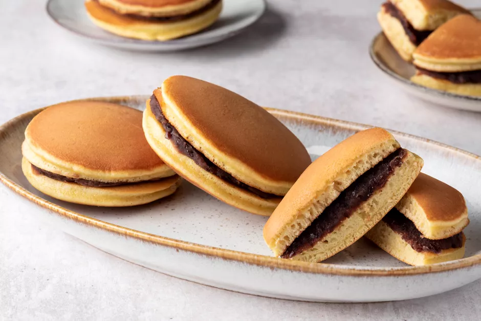

Dorayaki recipe

Description
Traditional Japanese confection dorayaki is made of two hand-sized American-style pancakes sandwiched together with a sweet filling, the most popular of which is azuki red beans (anko). However, custard, chestnuts (kuri), and cream (matcha cream, cream with fruits, etc.) are also popular. Dorayaki is a much-loved favorite among both children and adults in Japan. This dorayaki recipe is made the traditional way filled with anko.
Ingredients
- 2 large eggs
- 2/3 cup of sugar
- 1/2 teaspoon of baking soda
- 3 tablespoons of water, or milk
- 1 cup of sifted all-purpose flour
- vegetable oil, for frying
Steps
Everything ready? Then let's begin!
- Put eggs and sugar in a bowl and whisk very well.
- Dissolve baking soda in water.
- Add water into egg mixture.
- Add sifted flour into egg mixture gradually.
- Heat a skillet or hot plate and lightly oil it.
- Pour a scoop of the batter into the skillet and make a small pancake (about 3 to 4 inches in diameter).
- Turn over when bubbles appear on the surface.
- Repeat this process for each pancake.
- Cool the pancakes.
- Make pairs of pancakes, and put a scoop of anko sweet beans between them.
That's it!